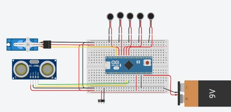

SpotiPi
Raspberry Pi music player · Sept. 2026 – Present

Overview
I wanted a phone-free way to listen to music, so I started building SpotiPi. It is a custom music player that runs on a Raspberry Pi, connects to the Spotify API for streaming and playback, and uses a Python interface to control your music. The whole system sits inside a 3D-printed enclosure I designed in SolidWorks. The project is still in progress, so here’s where it stands and what’s left to build.
How it works
SpotiPi pairs a Raspberry Pi with the Spotify API to stream and
control music in a compact, 3D-printed package. A Python program
running on the Pi handles the connection to Spotify, including
account authentication, accessing the user's library, and managing
playback. Physical buttons connected to the Pi's GPIO pins let the
user play and pause, skip tracks, and adjust the volume, with audio
output through a 3.5 mm jack. The interface is intentionally
minimal, with no screen to stare at, so the user can stay focused on
whatever they're doing instead of reaching for their phone.
The enclosure is being designed in SolidWorks to house the Pi,
buttons, and wiring in a portable, pocket-sized form, and will be 3D
printed once the design is finalized.


Tools & tech
Raspberry Pi · Python · Spotify API · SolidWorks · 3D printing
What's done
- Got Spotify API streaming working through the Pi
- Built the Python playback controls and UI
- Wired a working circuit with all components functioning
Next steps
- Finish modeling the enclosure and print it
- Tidy and secure the wiring to fit inside the enclosure
- Add a battery to make it portable
What I learned
The biggest thing this project has taught me is how to debug hardware when nothing works at first — tracing a problem through the wiring, code, and connections one piece at a time instead of guessing. Getting the circuit fully functional took patience and a lot of trial and error, and sticking with it is what got everything working.
← back to projects